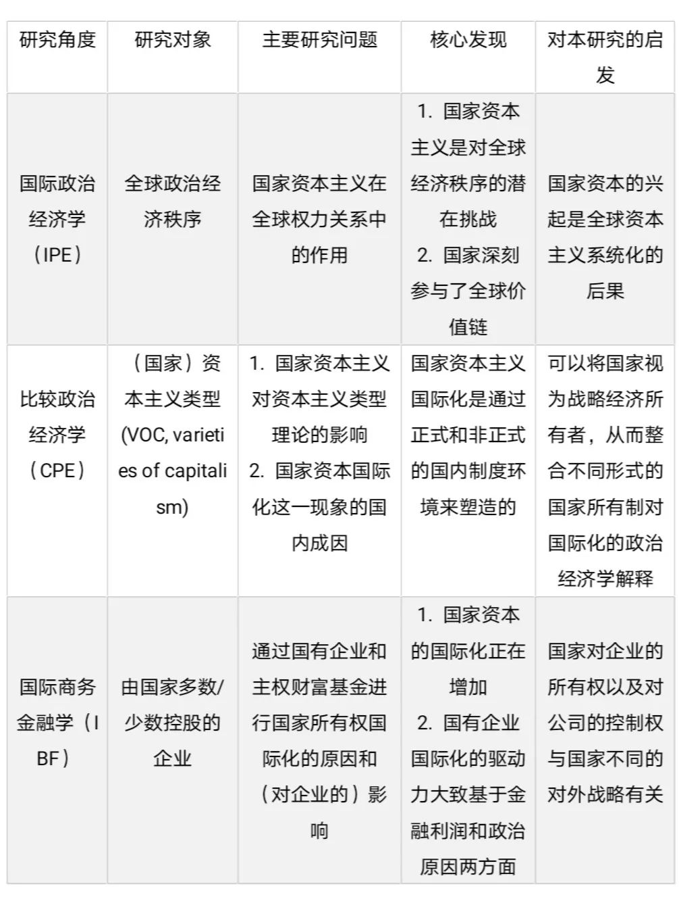
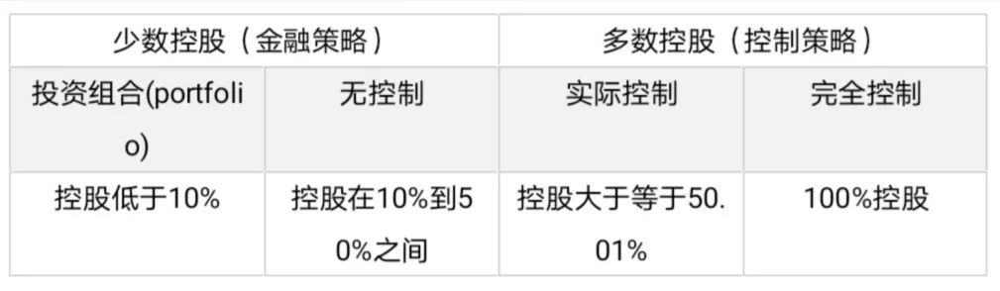
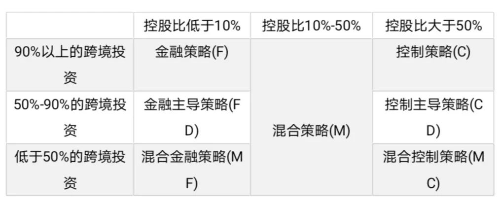
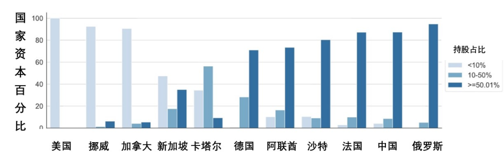
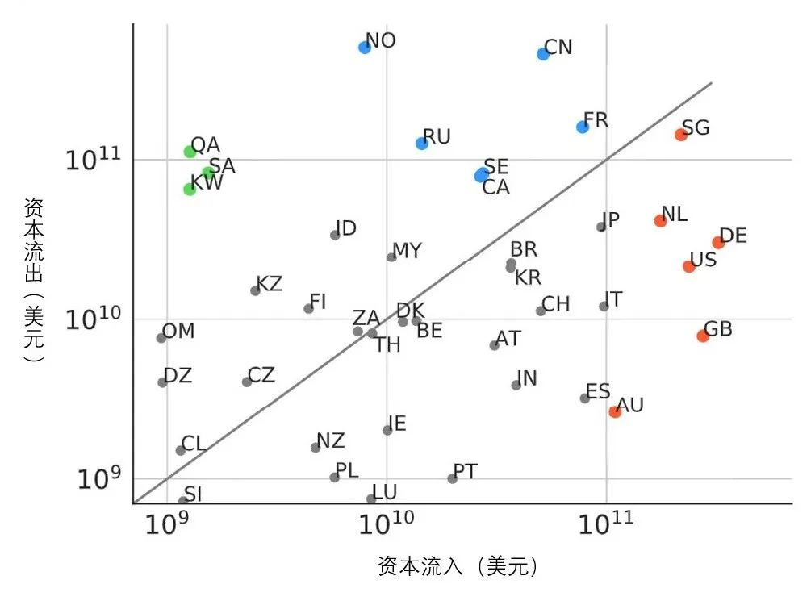

收录于合集

作品简介
【作者】 Milan Babic：荷兰阿姆斯特丹大学社会与行为科学学院研究院博士生；
Javier Garcia-Bernardo：荷兰阿姆斯特丹大学社会与行为科学学院研究员；
Eelke M. Heemskerk：荷兰阿姆斯特丹大学社会与行为科学学院副教授
【编译】 王馨翊（国政学人编译员，伦敦国王学院本科生）
【校对】 刘瑛琛
【审核】 吴天麟
【排版】 赵怡雯
【来源】 Milan Babic, Javier Garcia-Bernardo & Eelke M. Heemskerk (2020) The rise of transnational state capital: state-led foreign investment in the 21st century, Review of International Political Economy , 27:3, 433-475, DOI: 10.1080/09692290.2019.1665084

期刊简介
Review of International Political Economy, 国际政治经济学评论，创立于1994年，是一本以国际政治经济学为主要内容的同行学术评审杂志。2019年的影响因子为3.610。
**跨国国家资本的崛起：国家资本的新常态 ******
The Rise of Transnational State Capital: State-led Foreign Investment in the 21st Century
Milan Babic
Javier Garcia-Bernardo
Eelke M. Heemskerk
内容提要
由国家主导的跨境投资是一个在全球政治经济中最近兴起、但未被充分研究的现象。现有的研究多采用轶事和案例导向的角度，并未对跨国国家投资这一现象、及其对21世纪资本主义国家权力转变的后果进行系统性的大规模分析。本文为填补这一空白迈出了第一步，并提供了两个创新的贡献。首先，就概念而言，本文在加权所有权关系的基础上分析国家主导的跨境投资。这些国家资本关系是各国作为世界各地公司的投资者所创造的。其次，就经验而言，本文通过建立和分析迄今为止最大的跨国国有资本数据集来验证所提出的方法。作者展示了不同国家使用了哪些不同的对外投资策略，并根据它们在跨国国家资本全球网络中的相对位置对国家进行分类。本文的研究结果解释了在全球化的背景下，国家权力和主权持续不断地转型中产生的一个重要现象，并用一种谨慎且以数据主导的方法来识别这种转型的不同途径和维度。
文章导读
01
跨国国家资本的崛起
近年来，由国家主导的跨境投资变得越来越普遍，所涉及的金额极为庞大。2017年5月，中国化工以430亿美元收购瑞士农化巨头先正达（Syngenta）（编者注：先正达是当前世界最大的农药生产商），这是中国有史以来最大的单一对外直接投资（FDI）。2017年8月，俄罗斯石油（Rosneft）以130亿美元收购印度的爱萨石油（Essar Oil），这是印度有史以来最大的跨境投资项目。
然而，这两个具有里程碑意义的跨境投资案例都引发了来自政治界和媒体界的强烈关注甚至是顾虑。在中国化工的投资落地后，先正达的CEO快速出面澄清“这只是一个正常的金融交易”；而印度的国安和情报机构更是对俄罗斯石油公司的交易做出了安全警告。
由此可见，虽然国家资本参与的投资活动大幅增加，但是相较传统由私有资本主导的投资项目，国家资本投资项目本身包含了更多地缘政治的因素，这也经常导致不安全感的产生。
以往的研究大多从轶事和案例导向的角度出发，只分析一个或者几个案例，并不能有助于全面的理解。本文致力于填补这一学术空白，并为此创建了一个新的数据库，涵盖了全球范围内超过一百万家由国家资本投资的企业当前可获得的所有信息。
（ 编者注：本文作者制作了一个可交互的投资地图，在地图上可查看进出各国的国家资本
02
国家在经济全球化中的角色和作用
了解国家在资本主义经济中的作用是政治经济学研究中的一个关键问题。在不同的研究中，国家可以被理解为市场创造者、监管者或（国内）资本的代表等不同角色，而且国家在经济事务中的角色也随着历史发展变化。国家在经济安排中的普遍崛起集中于三个时段，分别是19世纪后期、20世纪中期以及现在的21世纪初。最近的一波从2000年以后开始，在2008年金融危机后加速发展。在这一波中，包括金砖国家和一些东亚国家在内的新兴经济体在全球经济中崛起，它们大致都采用一种 “国家渗透型” 的市场经济模型。
前几波国家主义高峰阶段主要通过关税、对幼稚产业的贸易保护主义、强有力的集中产业政策以及法团主义协调来保护和发展国内经济。而当前这波浪潮中，国家行为体大量通过国有跨国公司或主权财富基金从事全球经济活动（例如跨境并购或收购），更深入地嵌入了全球经济结构。
已有的研究对国际化的国家资本性质很有争议。一方面，国家资本与全球经济结构几乎可以被解释为无缝整合，因为国家将自己转变为了公司的所有者，与私有资本共同竞争。国家成为了国有企业中的多数或少数股权投资者，而国家主导的主权财富基金在管理结构和运营模式上与养老金、捐赠基金和基金会相差无几，所有这些机构也都依赖全球金融市场来获得投资机会。另一方面，我们也可以观察到，许多政府都担心国家资本国际化背后的地缘政治利益。
对于这种学术争论，本文尝试通过大规模数据分析来对各国的投资意图和策略进行大致区分。
03
不同学科对跨国国家资本的研究倾向和核心发现
如下表所示，当前对国家资本国际化的研究主要集中于三个学科，分别为：着重于公司层面的国际商务金融学（IBF）；考虑国家层面的比较政治经济学（CPE）；以及专注于全球政治经济秩序的国际政治经济学（IPE）。

总而言之，现有文献为我们提供了三个切入点：所有权关系的重要性，国家作为跨国资本所有者的作用，以及国家资本国际化的系统性后果。
04
研究设计
虽然可能和具体情况有所出入，但简单来说，国家资本和被投资公司的关系就是国家通过股权对公司进行一定控制，公司基于股权结构回馈国家投资者股息。
本文首先考虑了股权比例和国家资本投资策略的关系，股权结构以50%控股为界限分为两种情况，代表两种不同的投资策略，如下图所示：

10%这个数据的选择基于联合国贸易和发展会议 （UNCTAD）对可见的国家影响(perceptible state influence)的标准。虽然在一些情况下，低于50%的控股也可以影响公司的运营，但是基于保守的考虑，本文仍旧选择了50%的数值来界定国家资本对被投资方的影响。
另外，本文通过被投资企业的估值，对上述的所有权关系进行加权，以此来理解全球国际资本的关系网，以及各国在这个关系网中的相对位置。也就是说，加权所有权=股权比例*企业估值（营收额）。
通过分析各国的投资结构，本文将各国的投资策略分为七种，如下所示：

05
研究结果
本文的原始数据来源于Bureau van Dijk的Orbis数据库（2017年12月），该数据库包含有关全球2亿多家公司的信息。经过一系列数据清洗，并排除营收额低于一千万美元的公司后，作者们创建了一个包含22182个国家资本参与的跨国投资数据库。
投资战略
从投资项目的数量来看，约82.7%的所有权关系都是投资组合（国家资本控股在10%以下）的模式。就投资金额而言，超过 56.4%的国家资本采取了主要控股（国家资本拥有超过50%的股权）的形式。然而即使在以投资金额为衡量标准的前提下，超过三分之一（34.2%）的跨境国家资本仍然采用了投资组合的形式。这说明，国家参与国际投资的方式和私人投资机构非常相似。国家和企业并不是两个完全对立的行为体，反之，它们在同样的金融市场中竞争，这也表明了一些鼓吹“国家对抗市场”的言论的局限性。
如下图所示，美国、挪威和加拿大采用的是金融策略（F），90%以上的跨境投资在企业中的控股比低于10%；新加坡是一个混合金融策略（MF）的案例；卡塔尔采用混合策略（M）；德国、阿联酋、沙特阿拉伯、中国和法国采用了控制主导策略（CD）；而俄罗斯是控制策略（C）的一个例子，因为其90%以上的跨境国家资本投资在被投资公司中持股比例都大于50%。

值得注意的是，不止是中国和俄罗斯这类偏向“国家渗透型”的经济体，包括德国和法国在内的其他国家也在跨境投资国家资本时倾向于采用控制策略。
各国在投资关系网中的相对位置
此外，基于对资本流入和流出的计算，各国大致可被分为三类：投资方、被投资方（投资目标国家）、和两者的混合。下图可以看到各国在跨国国家资本关系网中的相对位置。橙色组是世界上领先的投资目标国家，几乎都是西方国家。蓝色组是世界前列的投资方国家，构成相对复杂，包括了俄罗斯和中国在内的国家主义经济体，以及法国挪威等西方国家。绿色组包括沙特在内的多个中东国家，代表相对极端的情况，因其资本流出量远远超过了流入量。

（ 编者注：具体国家代码可查看 https://countrycode.org/）
值得注意的一点是，金砖国家的投资模式和在总体关系网中的相对位置并不如之前许多研究所暗示的那样统一。它们在国家投资的流入和流出水平上表现出了显著差异：中国的对外投资水平较高，而印度的平均水平则相对较低；就比例而言，南非相比中俄吸引了更多的境外资本。
06
深入探讨
这个研究中一个重要的问题是，单纯的数据分析并未对国家资本国际化背后的原因做出充分解释。因此，作者针对一些具体情况进行了“放大”（zooming in）。
作者们主要分析了一个问题：为什么政治经济差异很大的国家，比如中国和德国，会显示出相似甚至相同的对外投资战略？他们发现虽然投资行为相似，但是同样的策略背后的动机并不同。其中，各国的地理环境和产业规划起到了关键作用。
中国国家资本投资的公司涵盖了世界上几乎所有区域；相比之下，几乎80％的德国国家资本集中在欧洲（主要是英国），只有少量投资于澳大利亚、美国和亚洲。中国的投资策略和其“走出去”（going global）的大战略吻合，旨在通过国家资本进行大规模并购交易，使中国经济从出口驱动型制造业向高端、高科技研发和国内消费转移。中国国家资本投资的最大几个公司，例如先正达（Syngenta），尼德拉（Nidera）或葡萄牙电力公司（EDP），都为中国政府获取农业化学或可再生能源等核心行业的尖端技术提供了途径。
相较之下，德国的投资战略也是针对几个产业以求培养‘国家龙头企业’（national champion），尤其是物流运输产业。主要的投资项目包括收购其他运输公司（例如英国Arriva集团）或建立DB Schenker（德国铁路物流部门）的子公司，从而在欧洲物流市场中竞争。德意志铁路公司的投资（Deutsche Bahn）占据了德国跨境国家资本国际化的很大一部分。
07 ****
结论
以往的研究中，普遍的认知是像中国和俄罗斯这样的“国家主义”经济体在国际政治经济中会倾向于更具战略性的控制策略；而更“自由”、更“西方”的经济体，类似加拿大或美国，会采用更在意投资的金融回报。但是，本文表明这种论点并不完全成立，两种策略在全球政治经济中都占主导地位，一些典型的西方国家在投资时也会倾向于使用控制策略。实际上，在世界前20名的投资国家中，15名都使用了趋向控制的策略。
随着大量资金流入欧洲和英美核心国家，跨国国家资本已经深度融入了自由世界秩序，这也帮助我们理解全球化与国家资本崛起之间的关系。无论如何，本文强调了全球经济中的国家资本国际化不仅是一种发展模式或国家主义经济体中产生的一个副产品。相反，它代表了需要被进一步探索和理解的新兴政治经济动态。
译者评述
本文采集大量数据，对各国国家资本的投资结构进行分析，以此来确定这类跨国投资的内在逻辑和国家战略目标。文章的大部分篇幅都致力于用数据描述国家资本的跨国投资是怎么样完成的。建立这样的数据集尤其重要，因为常用的一些宏观数据有两个缺点。首先，国际收支差额（BOP）、对外直接投资（FDI）等数据并没有区分国家资本和私人资本在国际投资中的角色。更重要的是，这些数据被认为并不足够准确——以国际收支差额为例，由于全球价值链的产生，中间商品（intermediate goods）的交易被重复计算，导致了很大的误差 (Gereffi 2014)。然而，很多研究直接利用这些数据，忽视了它们是“人为的估计，而不是真实的数值”（human-made estimates, not true values），将只能“描述大致趋势”的数据作为详实可靠的变量进行研究 (Linsi 和 Mugge 2019)。
作为一篇主要以数据为导向的研究，本文描述了国家资本的全球化是“怎么样”发生的。但是，本文的研究成果还应与基于少量案例的质化研究进行更多的有效结合，从而探究跨境国家资本投资背后更多的“为什么”。正如作者们在结尾所说，本文更多是在为后续对国家资本国际化的研究铺路。
译者对本文研究内容还有以下几点思考。
传统的政治经济学理论通常认为“国家”和“市场”是近乎对立的，例如，学界普遍认为国家的权力和影响力因为全球价值链的产生而被削弱，与之相对的是跨国公司的崛起，和治理权向私人领域的转移（outsourcing） (Mayer 和 Phillips 2017)。然而，跨国国家资本和跨国公司的崛起，实际上都在模糊“国家”和“市场”两者间的界限。一方面，跨国国家资本使国家将自身变成了公司的所有者，主权财富基金等机构也是在依靠全球市场来谋取利益。另一方面，一部分跨国公司“富可敌国”，对国内国际政治也有着显著的影响力。在这种情况下，随着全球政治经济的发展，“国家”和“市场”的二分法未来会如何演变，也是一个值得关注的问题。
另外，近年来中俄等国国家资本的跨境投资经常被塑造成“威胁”，被与安全化话语联系起来 (Campion 2020, Kuzemko 2014, Siddi 2019)。然而本文的研究结果表明，中俄两国的投资策略相较德国、法国等国家并没有明显不同，但是德法这类西方国家的跨境投资就很少被视为“威胁” (USTR 2019)。同时，许多信奉华盛顿共识的西方国家也越来越多地主导跨国投资，甚至很多采用了倾向于控制策略的投资方式。因此，这种话语的构建和传播在很大程度上是脱离于实际的，而这种话语的形成方式也就值得更深入的研究。
参考文献：
Campion, Andrew Stephen. 2020. “From Cnooc to Huawei: Securitization, the China Threat, and Critical Infrastructure.” Asian Journal of Political Science 28 (1): 47-66.
Gereffi, Gary. 2014. “Global value chains in a post-Washington Consensus world.” Review of International Political Economy 21 (1): 9-37.
Kuzemko, Caroline. 2014. “Ideas, power and change: explaining EU–Russia energy relations.” Journal of European Public Policy 21 (1): 58-75.
Linsi, L., and D. Mugge. 2019. “Globalization and the growing defects of international economicstatistics.” Review of International Political Economy 26 (3): 361-383.
Mayer, F. W., and N. Phillips. 2017. “Outsourcing governance: states and the politics of a ‘global value chain world’.” New Political Economy 22 (2): 134-152.
Siddi, Marco. 2019. “The EU’s Botched Geopolitical Approach to External Energy Policy: The Case of the Southern Gas Corridor.” Geopolitics 24 (1): 124-144.
USTR. 2019. 2019 Special 301 Report. Office of the United States Trade Representative.
<img src=’/images/1969/13.jpeg’ width=‘100%’ />文章观点不代表本平台观点，本平台评译分享的文章均出于专业学习之用, 不以任何盈利为目的，内容主要呈现对原文的介绍，原文内容请通过各高校购买的数据库自行下载

好好学习，天天“在看”
国政学人
支持学术公益与知识传播
微信扫一扫赞赏作者 __赞赏
已喜欢，对作者说句悄悄话
取消 __
发送给作者
发送
最多40字，当前共字
上一页 1/3 下一页
长按二维码向我转账
支持学术公益与知识传播
受苹果公司新规定影响，微信 iOS 版的赞赏功能被关闭，可通过二维码转账支持公众号。